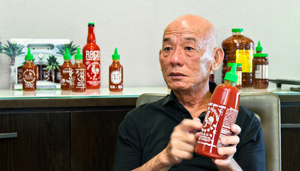
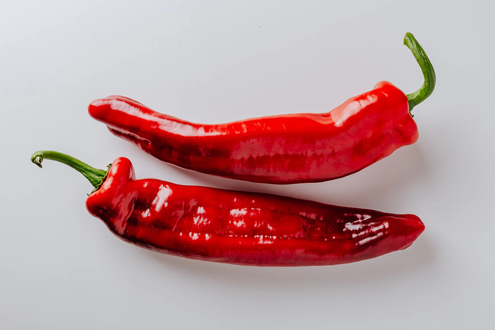

HISTORY HISTORY HISTORY HISTORY HISTORY
David Tran began making chili sauces in 1975 in his native Vietnam, where his brother grew chili peppers on a farm north of Saigon. In 1978, the new Communist Vietnamese government began to persecute ethnic Chinese in south Vietnam. Tran and three thousand other refugees crowded onto the Taiwanese freighter Huey Fong, heading for Hong Kong. After a month-long standoff with British authorities, its passengers disembarked on January 19, 1979. Tran was granted asylum in the United States. He started Huy Fong Foods in 1980, naming the company after the refugee ship that brought him out of Vietnam.
The sauce was initially supplied to Asian restaurants near his base in Chinatown, Los Angeles, but sales grew steadily by word of mouth and it soon became available at Asian grocery stores in other parts of the United States. In December 2009, Bon Appétit magazine named the sauce Ingredient of the Year for 2010. In 2012, over 20 million bottles were sold Huy Fong Foods says demand has outpaced supply since the company started making the sauce. The company does not advertise because advertising would widen that gap.
Sriracha sauce has grown from a cult taste to one of the food industry's most popular condiments. It has been used in burgers, sushi, snacks, candy, beverages, and even health products. Tran said he was dissuaded from securing a trademark on the word sriracha since it is difficult to obtain one named after a real-life location. This has allowed others to develop their own versions, using the name. In 2016, Lexus partnered with Huy Fong Foods to build a single promotional Sriracha IS sport sedan.

NUISANCE LAWSUIT
In October 2013, the city of Irwindale filed a lawsuit against the Huy Fong Foods factory after approximately 30 residents of the town complained of the spicy smells the factory was emitting while producing sriracha sauce. The plaintiff initially sought an injunction enjoining Huy Fong from "operating or using" the plant. On November 27, 2013, Judge Robert H. O'Brien ruled partially in favor of the city, declaring Huy Fong Foods must cease any operations that could be causing the noxious odors and make changes to mitigate them, though he did not order that operations cease completely. According to the judge, although there was a "lack of credible evidence" linking locals' complaints of breathing trouble and watering eyes to the factory, the odor that could be "reasonably inferred to be emanating from the facility" is, for residents, "extremely annoying, irritating and offensive to the senses warranting consideration as a public nuisance." In late January 2014, the city of Irwindale announced it was expanding its case against Huy Fong Foods to include a claim of breach of contract, alleging that the plant violated a condition of its operating permit by emitting harmful odors.
During the legal battles, Tran has openly expressed his interest in moving the factory to another state, after the Irwindale City Council voted to declare the Sriracha factory a public nuisance. A delegation led by Texas state representative Jason Villalba toured the Irwindale factory and offered incentives to move operations to Denton. Tran later decided to keep the factory in southern California, and on May 29, 2014, it was announced that Irwindale had dropped the lawsuit against Huy Fong Foods.

PEPPER SUPPLY
Underwood Ranches was the primary supplier of jalapeños since 1988. In 2016, Huy Fong overpaid Underwood by $1.46 million for prepayment of estimated costs. According to Underwood's lawyer, Tran attempted just before this to hire away Underwood's COO in order to form a new chili-growing concern, breaking the trust between Tran and Underwood. Huy Fong sued Underwood for not paying back this overpayment; Underwood countersued for breach of contract and committing fraud by intentionally misrepresenting and concealing information. In July 2019, the case was decided generally in favor of Underwood, with a California jury awarding the grower $10 million in punitive damages and $14.8 million to make up for lost contract revenue between 2016 and 2019. However, the jury also decided that Huy Fong's claim of overpayment was valid, so $1.46 million was deducted from the damages.
In June 2022, Huy Fong Foods temporarily halted the production of the chili sauce. This decision was prompted by a severe shortage of chili peppers caused by a drought in Mexico that affected the quality of the peppers. While production soon resumed in the fall, the company soon declared another "unprecedented inventory shortage" in April 2023, offering no estimate as to when this shortage might be resolved. An August 2023 CNBC special program claims that the shortage was caused by Huy Fong switching pepper suppliers, as Underwood still has production capacity (land, irrigation, processing) for the needed peppers. In April 2024, the company told customers it had halted production of all its products until September as its chilli harvest was too green.